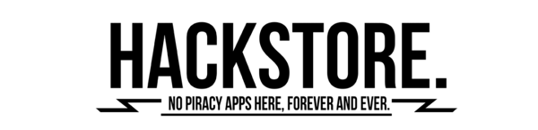

- Deadpool, es un personaje de las historietas creado a principios de 1989 por el dibujante Rob Liefeld y el escritor Fabian Nicieza para la editorial norteamericana Marvel Comics. Su primera aparicion fue en el numero 98 de la coleccion Nuevos Mutantes